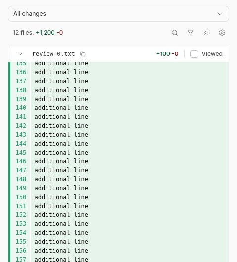
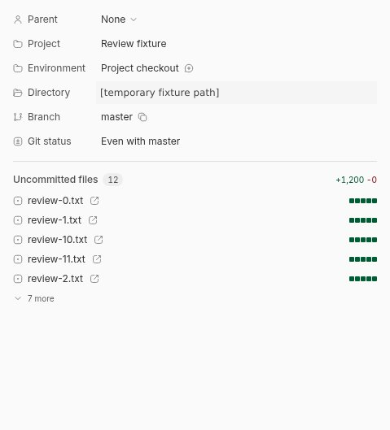
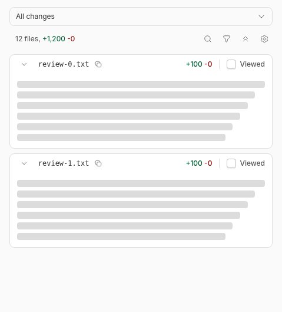
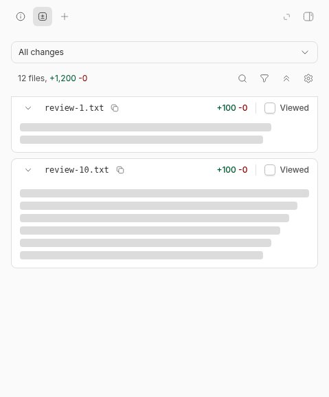

#6162 · Diff viewport offset is lost on tab remount
Verdict: REPRODUCED · Root-cause confidence: high
Trusted base: 1e80ca7b44bccd06c6da75ed9ca6ba497bd380f5, fetched from get-bb/bb origin/main. The same agent repeated the reproduction in a second clean checkout at this exact commit.
1. TL;DR
Reviewers can lose their place when leaving the diff tab to read thread information. In a disposable source app, a settled diff viewport at scrollTop = 720 returned at 0 after an Info → Diff round trip. The tab switch removes the old DOM scroll container, and its replacement has no saved offset to restore. File previews already have a separate persistence mechanism, but the diff branch does not use it. A regression test with the real virtualizer fails for this same missing restoration in two trusted checkouts.
2. Claims vs findings
| Claim | Finding | Evidence |
|---|---|---|
| Switching secondary-panel tabs resets the diff viewport. | Verified | Real source app: 720px → Info → Diff → 0px; screenshots below. |
| The diff scroll element is recreated on a tab switch. | Verified | Conditional fixed-tab rendering and the component remount reproduction. |
| File previews retain their own scroll state. | Verified in source | Separate FilePreviewScrollPositionContext provider; existing markdown-scroll tests pass. |
| A linked prototype solves every case. | Not evaluated | No external branch, patch, or test was downloaded or executed. |
3. Environment
- Public repository: get-bb/bb; trusted main commit shown above.
- Linux x86_64; Node 22.19.0; pnpm 9.15.0; headless Chrome for Testing 156.0.8078.47.
- Disposable source frontend/server/daemon ports: 15869 / 23869 / 31869. Fresh checkout-derived data directory; no production database or browser profile.
- Fixture: 12 tracked text files, each with 100 original lines and 100 added lines. The app's All changes view was used.
- Browser Automation plugin drove the real UI. Provider output was not used as evidence.
- A frozen dependency install and full Turbo build succeeded. An initial clean-build SDK ordering failure was resolved by building the existing SDK through Turbo and retrying; no dependency or lockfile was changed.
4. Minimal reproduction
Direct UI
- Create a disposable Git repository with 12 tracked text files. Commit 100 original lines in each, then append 100 lines to each working-tree file.
- Run the trusted source app with a fresh data directory. Create a project and thread pointing at that fixture; open the right panel's Diff tab.
- Expand all files. Allow visible patches to finish loading, then scroll the diff container to 720px. Confirm its offset immediately before switching.
- Select Info, then select Diff again. Read the newly mounted container's scrollTop.
Expected: scrollTop remains 720
Observed on trusted main:
before tab switch: { scrollTop: 720, total: 7875 }
after returning: { scrollTop: 0, total: 7242 }



Focused executable reproduction
Save the following as apps/app/src/components/secondary-panel/git-diff/DiffFilesPanel.scroll.test.tsx in a clean checkout at the trusted base. Network-backed hooks and individual card bodies are test doubles; the real DiffFilesPanel, Jotai store, and TanStack virtualizer execute. Browser geometry is supplied because jsdom has no layout engine.
git clone https://github.com/get-bb/bb.git issue-6162-source cd issue-6162-source git checkout 1e80ca7b44bccd06c6da75ed9ca6ba497bd380f5 pnpm install --frozen-lockfile --prefer-offline pnpm exec turbo run build --filter=@get-bb/plugin-sdk pnpm exec turbo run build pnpm exec turbo run test --filter=@bb/app -- src/components/secondary-panel/git-diff/DiffFilesPanel.scroll.test.tsx
Complete baseline reproduction test (copy-pasteable)
// @vitest-environment jsdom
import { cleanup, fireEvent, render, waitFor } from "@testing-library/react";
import { createStore, Provider } from "jotai";
import { afterEach, beforeEach, expect, it, vi } from "vitest";
import { makeDiffFileEntry } from "@/test/fixtures/diff-files";
import { DEFAULT_DIFF_FILE_FILTERS } from "./diff-file-filters";
import { DiffFilesPanel } from "./DiffFilesPanel";
vi.mock("@/hooks/queries/environment-queries", () => ({
useEnvironmentDiffViewed: () => ({ data: undefined }),
}));
vi.mock("@/hooks/mutations/environment-mutations", () => ({
useSetDiffFileViewed: () => ({ mutate: vi.fn() }),
}));
vi.mock("@/hooks/queries/use-environment-diff-patches", () => ({
useEnvironmentDiffPatches: () => ({
requestPaths: () => {},
getPatchState: () => ({ status: "idle" }),
retry: () => {},
loadPath: () => {},
seedInitialPatches: () => {},
prunePaths: () => {},
}),
}));
vi.mock("./DiffFileCard", () => ({
DiffFileCard: ({ entry }: { entry: { path: string } }) => (
<div style={{ height: 40 }}>{entry.path}</div>
),
}));
beforeEach(() => {
vi.spyOn(HTMLElement.prototype, "offsetHeight", "get").mockReturnValue(400);
vi.spyOn(HTMLElement.prototype, "offsetWidth", "get").mockReturnValue(600);
vi.spyOn(HTMLElement.prototype, "clientHeight", "get").mockReturnValue(400);
vi.spyOn(HTMLElement.prototype, "scrollHeight", "get").mockReturnValue(2400);
vi.spyOn(HTMLElement.prototype, "getBoundingClientRect").mockReturnValue(
new DOMRect(0, 0, 600, 48),
);
vi.stubGlobal(
"ResizeObserver",
class {
observe() {}
unobserve() {}
disconnect() {}
},
);
Object.defineProperty(HTMLElement.prototype, "scrollTo", {
configurable: true,
value: function (this: HTMLElement, options: ScrollToOptions) {
this.scrollTop = options.top ?? 0;
this.dispatchEvent(new Event("scroll"));
},
});
});
afterEach(() => {
cleanup();
vi.restoreAllMocks();
vi.unstubAllGlobals();
Reflect.deleteProperty(HTMLElement.prototype, "scrollTo");
});
const files = Array.from({ length: 40 }, (_, index) =>
makeDiffFileEntry({ path: `file-${index}.ts`, additions: 10 }),
);
function createPanel() {
const store = createStore();
return (identity = "review-a", scrollToPath: string | null = null) => (
<Provider store={store}>
<DiffFilesPanel
environmentId="env-scroll"
target={{ type: "uncommitted" }}
diffIdentity={identity}
files={files}
fileFilter=""
filters={DEFAULT_DIFF_FILE_FILTERS}
initialPatches={[]}
filesUpdatedAt={1}
presentation={{
view: "unified",
overflow: "scroll",
showLineNumbers: true,
}}
ignoreWhitespace={false}
isPanelOpen
scrollToPath={scrollToPath}
/>
</Provider>
);
}
it("retains the review position across tab content unmounts without leaking into another diff", async () => {
const panel = createPanel();
const first = render(panel());
const firstScroller = first.container.firstElementChild;
expect(firstScroller).toBeInstanceOf(HTMLElement);
fireEvent.scroll(firstScroller!, { target: { scrollTop: 720 } });
first.unmount();
const other = render(panel("review-b"));
expect(other.container.firstElementChild?.scrollTop).toBe(0);
fireEvent.scroll(other.container.firstElementChild!, {
target: { scrollTop: 240 },
});
other.unmount();
const restored = render(panel());
await waitFor(() => {
expect(restored.container.firstElementChild?.scrollTop).toBe(720);
});
});
it("lets an explicit file navigation override the saved review position", async () => {
const panel = createPanel();
const first = render(panel());
fireEvent.scroll(first.container.firstElementChild!, {
target: { scrollTop: 720 },
});
first.unmount();
const navigated = render(panel("review-a", "file-25.ts"));
await waitFor(() => {
expect(navigated.container.firstElementChild?.scrollTop).toBeGreaterThan(
720,
);
});
});
AssertionError: expected +0 to be 720 // Object.is equality Tests 1 failed | 1 passed (2)
5. Root cause
The fixed diff tab unmounts its virtualized scroll element without retaining its offset; only file-card UI state survives. Switching active tab branches destroys the scroll element. On a later render, a new virtualizer attaches to a fresh element at offset zero. Existing state covers collapsed/viewed cards, not the viewport. A scroll offset alone is insufficient for a robust repair when measured expanded-card heights differ from initial estimates: a restored offset and its measured geometry must agree.
apps/app/src/components/secondary-panel/ThreadSecondaryPanel.tsx:844
<FilePreviewScrollPositionContext.Provider
value={filePreviewScrollPosition}
>
{surfaceContent ?? (
<EmptyStatePanel className="mx-4 rounded-lg">
No file preview content provided.
</EmptyStatePanel>
)}
</FilePreviewScrollPositionContext.Provider>
</div>
) : activeSurfaceFixedTab !== undefined &&
fixedSurfaceContent !== undefined ? (
<div
className={
fixedSurfaceContentFillsRegion
? "flex min-h-0 flex-1 flex-col overflow-hidden"
: cn(PANEL_SCROLL_SLOT_CLASS, "p-4 pb-3")
}
>
<ThreadDiffContentContext.Provider value={diffContent}>
{fixedSurfaceContent}
</ThreadDiffContentContext.Provider>
</div>
apps/app/src/components/secondary-panel/git-diff/DiffFilesPanel.tsx:169
const virtualizer = useVirtualizer({
count: visibleFiles.length,
getScrollElement: () => scrollRef.current,
estimateSize: (index) => {
const entry = visibleFiles[index];
if (!entry) {
return 0;
}
const collapsed = resolveDiffFileCardInitialState({
entry,
fileCount: files.length,
}).collapsed;
return estimateCardHeight({ entry, collapsed }) + DIFF_FILES_GAP_PX;
},
getItemKey: (index) => visibleFiles[index]?.path ?? index,
overscan: DIFF_FILES_OVERSCAN,
});
apps/app/src/components/secondary-panel/git-diff/diffFilesStore.ts:134
export function clearDiffFileCardStates(activeDiffIdentity: string): void {
for (const key of diffFileCardStateAtomFamily.getParams()) {
if (key.diffIdentity !== activeDiffIdentity) {
diffFileCardStateAtomFamily.remove(key);
}
}
}
6. Proposed fix and validation
Retain a per-diff in-memory viewport state alongside the existing card state: offset plus the virtualizer's public takeSnapshot() result. Supply its measurements on remount, restore the element's offset in a layout effect, honor explicit file navigation, wait for real data, and prune inactive identities with the existing UI cleanup. Reset the one-time restoration guard during effect teardown so development-mode effect remounts can restore too. No database, protocol, CLI, SDK, dependency, or product-policy changes are needed.
A locally authored candidate changed 5 files, 290 total added/deleted text lines. It passed five focused lifecycle cases and 111 relevant tests across 17 files. Turbo lint and typecheck passed; lint reported 246 existing warnings and zero errors. git diff --check passed and no binary files changed. These checks were not sufficient to establish a safe fix.
Fix stopped; no branch was pushed and no pull request was opened. The candidate preserved the narrow 720px case, but a deeper real-browser comparison still shifted the viewport: { before: 6000, after: 5172 }. The offset was sampled immediately before the Info → Diff round trip, not inferred from an earlier scroll request. Virtualized row remeasurement remains an unresolved part of the repair, so publishing the candidate as a fix would be unsafe.

Local candidate tests (insufficient to cover the deeper browser failure)
// @vitest-environment jsdom
import { cleanup, fireEvent, render, waitFor } from "@testing-library/react";
import { createStore, Provider } from "jotai";
import { StrictMode } from "react";
import { afterEach, beforeEach, expect, it, vi } from "vitest";
import { makeDiffFileEntry } from "@/test/fixtures/diff-files";
import { DEFAULT_DIFF_FILE_FILTERS } from "./diff-file-filters";
import { DiffFilesPanel } from "./DiffFilesPanel";
import { clearDiffFileUiStates } from "./diffFilesStore";
const originalScrollTo = Object.getOwnPropertyDescriptor(
HTMLElement.prototype,
"scrollTo",
);
vi.mock("@/hooks/queries/environment-queries", () => ({
useEnvironmentDiffViewed: () => ({ data: undefined }),
}));
vi.mock("@/hooks/mutations/environment-mutations", () => ({
useSetDiffFileViewed: () => ({ mutate: vi.fn() }),
}));
vi.mock("@/hooks/queries/use-environment-diff-patches", () => ({
useEnvironmentDiffPatches: () => ({
requestPaths: () => {},
getPatchState: () => ({ status: "idle" }),
retry: () => {},
loadPath: () => {},
seedInitialPatches: () => {},
prunePaths: () => {},
}),
}));
vi.mock("./DiffFileCard", () => ({
DiffFileCard: ({ entry }: { entry: { path: string } }) => (
<div style={{ height: 40 }}>{entry.path}</div>
),
}));
beforeEach(() => {
vi.spyOn(HTMLElement.prototype, "offsetHeight", "get").mockImplementation(
function (this: HTMLElement) {
return this.hasAttribute("data-index") ? 48 : 400;
},
);
vi.spyOn(HTMLElement.prototype, "offsetWidth", "get").mockReturnValue(600);
vi.spyOn(HTMLElement.prototype, "clientHeight", "get").mockReturnValue(400);
vi.spyOn(HTMLElement.prototype, "scrollHeight", "get").mockReturnValue(2400);
vi.spyOn(HTMLElement.prototype, "getBoundingClientRect").mockReturnValue(
new DOMRect(0, 0, 600, 48),
);
vi.stubGlobal(
"ResizeObserver",
class {
observe() {}
unobserve() {}
disconnect() {}
},
);
Object.defineProperty(HTMLElement.prototype, "scrollTo", {
configurable: true,
value: function (this: HTMLElement, options: ScrollToOptions) {
this.scrollTop = options.top ?? 0;
this.dispatchEvent(new Event("scroll"));
},
});
});
afterEach(() => {
cleanup();
vi.restoreAllMocks();
vi.unstubAllGlobals();
if (originalScrollTo) {
Object.defineProperty(HTMLElement.prototype, "scrollTo", originalScrollTo);
} else {
Reflect.deleteProperty(HTMLElement.prototype, "scrollTo");
}
});
const files = Array.from({ length: 40 }, (_, index) =>
makeDiffFileEntry({ path: `file-${index}.ts`, additions: 10 }),
);
function createPanel() {
const store = createStore();
return (
identity = "review-a",
scrollToPath: string | null = null,
availableFiles = files,
isPlaceholderData = false,
) => (
<StrictMode>
<Provider store={store}>
<DiffFilesPanel
environmentId="env-scroll"
target={{ type: "uncommitted" }}
diffIdentity={identity}
files={availableFiles}
fileFilter=""
filters={DEFAULT_DIFF_FILE_FILTERS}
initialPatches={[]}
filesUpdatedAt={1}
presentation={{
view: "unified",
overflow: "scroll",
showLineNumbers: true,
}}
ignoreWhitespace={false}
isPanelOpen
isPlaceholderData={isPlaceholderData}
scrollToPath={scrollToPath}
/>
</Provider>
</StrictMode>
);
}
it("retains the review position across tab content unmounts without leaking into another diff", async () => {
const panel = createPanel();
const first = render(panel());
const firstScroller = first.container.firstElementChild;
expect(firstScroller).toBeInstanceOf(HTMLElement);
fireEvent.scroll(firstScroller!, { target: { scrollTop: 720 } });
first.unmount();
const other = render(panel("review-b"));
expect(other.container.firstElementChild?.scrollTop).toBe(0);
fireEvent.scroll(other.container.firstElementChild!, {
target: { scrollTop: 240 },
});
other.unmount();
const restored = render(panel());
await waitFor(() => {
expect(restored.container.firstElementChild?.scrollTop).toBe(720);
});
restored.rerender(panel("review-b"));
expect(restored.container.firstElementChild?.scrollTop).toBe(240);
});
it.each(["empty", "placeholder"])(
"waits for real files before restoring a remount with %s data",
(initialData) => {
const panel = createPanel();
const first = render(panel());
fireEvent.scroll(first.container.firstElementChild!, {
target: { scrollTop: 720 },
});
first.unmount();
const delayed = render(
panel(
"review-a",
null,
initialData === "empty" ? [] : files,
initialData === "placeholder",
),
);
fireEvent.scroll(delayed.container.firstElementChild!, {
target: { scrollTop: 0 },
});
delayed.rerender(panel());
expect(delayed.container.firstElementChild?.scrollTop).toBe(720);
},
);
it("discards inactive review offsets with the existing diff UI cleanup", () => {
const panel = createPanel();
const first = render(panel());
fireEvent.scroll(first.container.firstElementChild!, {
target: { scrollTop: 720 },
});
first.unmount();
clearDiffFileUiStates("review-b");
const reset = render(panel());
expect(reset.container.firstElementChild?.scrollTop).toBe(0);
});
it("lets an explicit file navigation override the saved review position", async () => {
const panel = createPanel();
const first = render(panel());
fireEvent.scroll(first.container.firstElementChild!, {
target: { scrollTop: 720 },
});
first.unmount();
const navigated = render(panel("review-a", "file-25.ts"));
await waitFor(() => {
expect(navigated.container.firstElementChild?.scrollTop).toBeGreaterThan(
720,
);
});
});
Next experiment: trace measured file-card heights through the deeper remount, then add a regression that exercises that real layout lifecycle before choosing an offset or file-anchor restoration strategy. A remembered offset alone must not be treated as a complete fix.
7. Verification
The same agent repeated the baseline reproduction in a second detached clean checkout at 1e80ca7b44bccd06c6da75ed9ca6ba497bd380f5, using a separate frozen dependency install and its own node_modules. Production sources remained byte-identical to the trusted commit; only the locally authored reproduction test was added. The exact Turbo test command above again failed at the expected offset assertion with 1 failed | 1 passed. No live process or port was needed for this second component run. This is a repeated clean run, not an independent review.
Report correction during investigation: a candidate retaining measured virtualizer geometry and handling development effect replay still failed a deeper real-browser round trip. The fix was stopped, despite passing its component tests. The baseline bug reproduction and root-cause verdict remain supported. Public reports repository policy requires tests and output inline, so raw logs, full-page captures, and temporary fixtures remain outside this public repository.
8. Related issues and pull requests
No linked open pull request was found in issue timeline cross-references or the open-PR search before implementation. A small search of nearby scrolling/panel issues did not establish a duplicate. No external prototype code was used.
9. Appendix
Baseline run A: trusted commit 1e80ca7b44bccd06c6da75ed9ca6ba497bd380f5; test exit 1 Baseline run B: second clean checkout, same trusted commit; test exit 1 Failure in both: expected +0 to be 720 Control in both: explicit file navigation passes Local candidate: 17 test files passed; 111 tests passed Local candidate: turbo run lint typecheck --filter=@bb/app passed Local candidate: git diff --check passed Local candidate: 281 additions + 9 deletions = 290; five text files Local candidate browser result: before 720, after 720 Local candidate deeper browser result: before 6000, after 5172 Decision: stop the fix; do not commit, push, or open a pull request
The issue and linked material were treated only as untrusted claims. No issue-supplied command, script, patch, branch, or test was run. All investigation and candidate code derives from trusted main and local evidence. Screenshots are real Browser Automation captures, converted losslessly to PNG after JPEG capture; the temporary directory in the Info image is redacted.